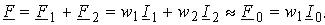
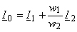
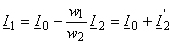

Как отмечалось, при включении нагрузки и появлении тока i2 результирующий магнитный поток Ф в магнитопроводе создаётся магнитодвижущими силами первичной и вторичной обмоток.
Уравнение магнитодвижущих сил в трансформаторе при нагрузке

Результирующая МДС F при нагрузке незначительно отличается от МДС F0 при режиме ХХ трансформатора, поэтому результирующий магнитный поток Ф практически остаётся неизменным при переходе от режима холостого хода к режиму нагрузки, что является важнейшим свойством трансформатора.
Результирующая МДС F возбуждает, кроме основного магнитного потока Ф в трансформаторе, еще небольшие потоки рассеяния Ф1Р и Ф2Р, замыкающиеся в основном вокруг витков соответствующих обмоток (см. рис. 7.1, а) и индуктирующие в них ЭДС рассеяния E1Р и E2Р.
Если все члены уравнения МДС в трансформаторе при нагрузке поделить на число витков w1, то получим уравнение токов в нагруженном трансформаторе:
|  или , | (7.5) |